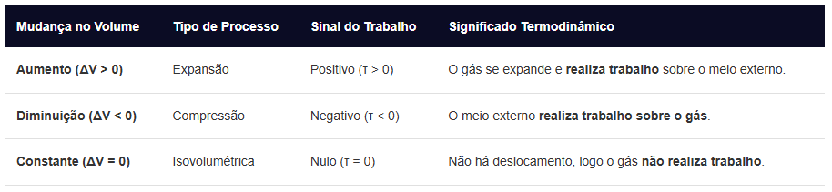

Trabalho de um Gás
O trabalho de um gás é a medida da energia transferida durante a expansão ou compressão desse gás. Na termodinâmica, ele acontece quando a força exercida pela pressão do gás provoca uma mudança no seu volume (deslocando um êmbolo ou pistão, por exemplo).
Fórmula:
Com pressão constante (Transformação Isobárica): Quando a pressão não muda, a fórmula é direta:
τ = p ⋅ ΔV
Onde:
τ: Trabalho realizado, medido em Joules (J).
P: Pressão do gás, em Pascal (N/m2).
ΔV: Variação do volume (Vf - Vi), em metros cúbicos (m3).
Com pressão variável (Análise Gráfica): Se a pressão mudar ao longo do processo, o trabalho é calculado encontrando a área sob a curva em um gráfico de Pressão versus Volume (P × V).
Convenção de Sinais:
O sinal do trabalho indica o comportamento do volume do gás no sistema:
